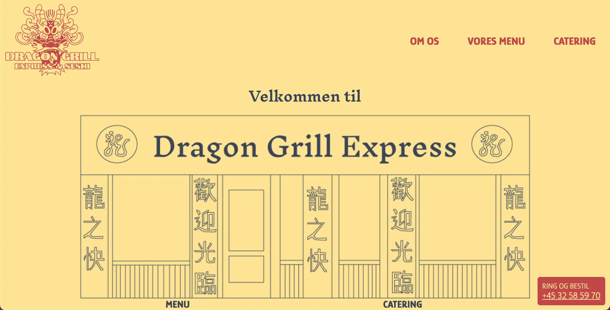

Om mig
Hej och välkommen till min portfolio för KEA Multimediadesign termin 1. Jag är 24 år och har arbetat med grafisk design tidigare, men detta är första gången jag arbetar med web-development, och här är alla projekt vi har arbetat med de senaste månaderna samlade på samma ställe. Klicka nedan för att läsa mer om mig och mitt liv innan KEA

My projects
Grundläggende web

Här kan du läsa om Tema 2 där jag lärde mig grundläggande metoder, program och tekniker som varit avgörande för de andra teman. Du hittar även den första uppgiften jag lämnade in.
Grundläggende UX

Läs här om Tema 3, där jag lärde mig mycket om hur man ger den optimala användarupplevelsen i utvecklingen av en prototyp. Du kan också hitta prototypen och hemsidan jag lämnade in.
Animation

Här kan du läsa om hur jag utvecklade mitt animerade spel under Tema 4. Du kan även läsa om min långa process med att utveckla spelet, både visuellt och interaktivt.
Grundläggende indhold
Läs här om de två projekt jag lämnade in under Tema 5, som arbetades i grupper. Läs även hur vad min roll i grupparbetet var, och hur jag skapade en meny som är lättare att navigera på.